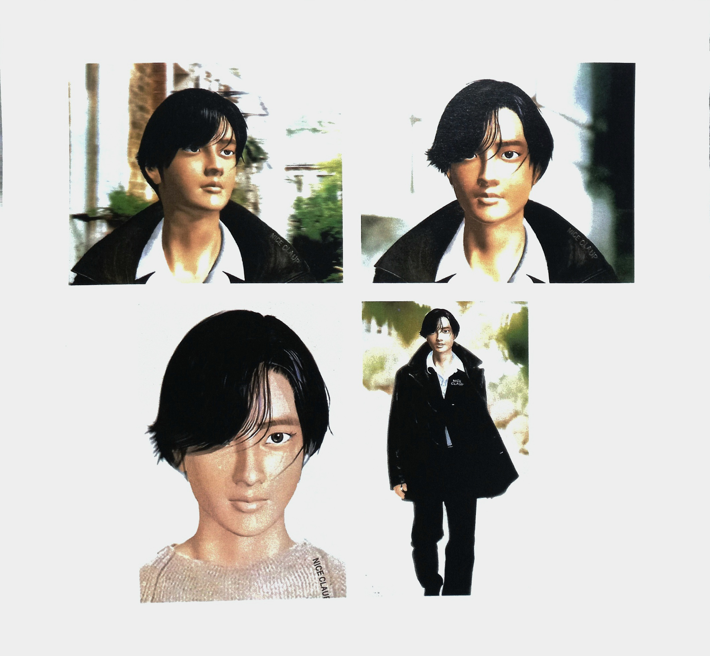
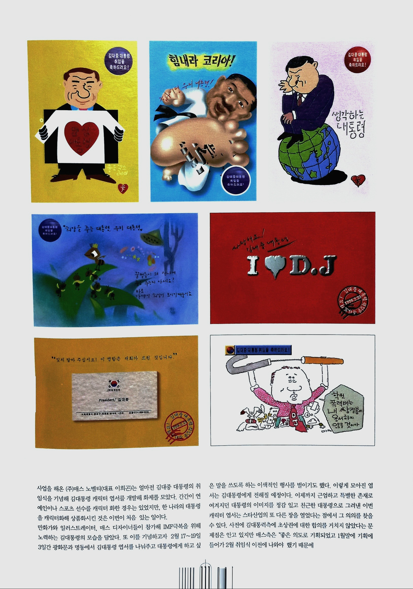
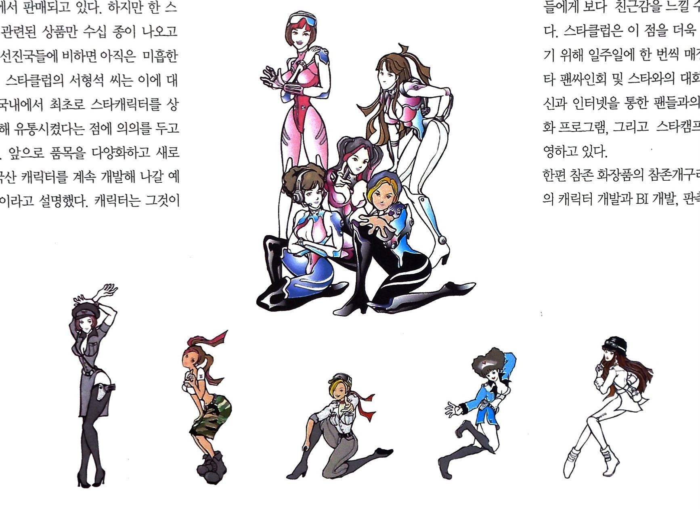

처음으로
처음으로

1998년에 데뷔한 사이버 가수. 1집 타이틀곡 "세상엔 없는 사랑" 으로 데뷔했다. 소프트웨어 제작사인 아담소프트 대표 박종만이 1년여의 제작기간을 걸쳐 만들어진 아담은 사이버스타들이 등장하고 있는 상황에서 사이버 스페이스를 외국 스타들에게 빼앗기지 않겠다는 포부로 만들어졌다.
인간을 사랑하여 인간이 되고 싶어 현실세계로 나와 못다한 말들을 노래로 전한다는 설정이다.

매스 노벨티는 김대중 대통령의 취임식을 기념해 김대통령 캐릭터 엽서를 개발했다. 당시 한 나라의 대통령을 캐릭터화해 상품화 시킨 적은 처음이 였다.
만화가와 일러스트레이터, 매스 디자이너들이 참가해 IMF 극복을 위해 노력하는 모습을 담기도 했다.
3일간 광화문과 명동에서 김대통령 엽서를 나눠주고 대통령에게 하고 싶은 말을 쓰도록하는 행사를 벌이기도 했다.
근엄하고 특별한 존재로 여겨잔 대통령의 이미지를 친근한 대통령으로 그려낸 캐릭터 엽서는 스타산업의 또 다른 장을 열었다는 점에서 그 의의를 찾을 수 있다.

당시 외국과 다르게 스타 산업은 미개척 분야였다. 스타=연예인이라는 인식이 강해 스타의 울타리를 좁게 생각하고 있어 이를 이용한 산업도 광고나 드라마, 음반 등에 국한되어 있었다. 캐릭터 산업에 뛰어든 스타클럽은 자우림, 지누션, 젝스키스 등의 캐릭터를 개발, 이를 문구 의류, 팬시용품 등에 적용시겼다.
스타 캐릭터는 성격, 행동, 목소리, 외형 등을 통해 표현된 강한 개성을 제품이나 서비스에 연계시켜 팬들이 스타들에게 친근감을 느낄 수 있게 한다.